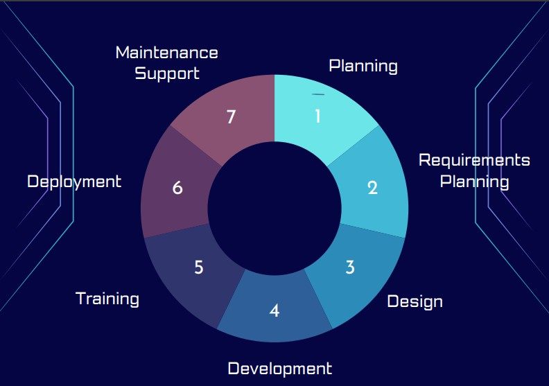

Introduction to the Software Development Lifecycle
The Software Development Lifecycle (SDLC) is the structured process used to plan, build, test, and maintain software systems.
It gives students a practical framework for understanding how real‑world software moves from an initial idea to a fully functioning product.
By exploring each stage—such as planning, analysis, design, implementation, testing, deployment, and maintenance—learners gain insight into the technical and organisational decisions that shape modern software development.
For A‑Level Computer Science, the SDLC provides an essential foundation for project work, problem‑solving, and understanding industry‑standard practices.
It helps students appreciate not just how software is written, but why disciplined processes lead to more reliable, secure, and effective solutions.
Stages of the Software Development Lifecycle
- Planning: Defining the project scope, objectives, and requirements.
- Analysis: Gathering and analysing requirements to understand user needs.
- Design: Creating the architecture and design of the software solution.
- Implementation: Writing the code to build the software.
- Testing: Verifying that the software works as intended and is free of defects.
- Deployment: Releasing the software to users.
- Maintenance: Ongoing support and updates to ensure the software continues to meet user needs.

Typical Roles in the SDLC
| OCR Syllabus Heading | Most Relevant SDLC Stages |
|---|---|
| Components of a Computer System |
|
| Software & Software Development |
|
| Exchanging Data |
|
| Data Types, Data Structures & Algorithms |
|
| Legal, Moral, Ethical & Cultural Issues |
|
| Computational Logic |
|
| Programming Techniques |
|
| Software Development Lifecycle |
|
| Algorithms |
|
| Programming Project |
|
Real‑World Application of the SDLC
In the real world, the SDLC is often adapted to fit the specific needs of a project or organisation.
For example, Agile methodologies focus on iterative development and continuous feedback, while Waterfall follows a more linear approach.
Understanding the SDLC helps students see how software projects are managed, how teams collaborate, and how quality is maintained throughout the development process.
By learning about the SDLC, students can better prepare for careers in software development and gain a deeper appreciation for the complexities of building software that meets user needs and industry standards.